CareCredit™ Refunds
Once a patient has an established CareCredit™ account, and a payment (purchase) has been processed through TIMS, refunds can be made through the POS System. A CareCredit refund (return) can be made as a line item on a credit memo or as a a separate payment reversal document.
CareCredit Payment on Credit Memo
- Select the desired patient in the Patients Panel, then click on the point of sale icon.

- Click the Credit Memo button. Create a new credit memo or open an existing one. (see POS Credit Memo help for more details)
- Click the radio button in front of the CareCredit option to indicate that this credit memo will contain a CareCredit payment line.
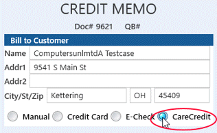
- Add line items for items and services to be refunded.
- When all charges have been entered, add a Payment line.
- Select "Payment" for Type.
- Select "Pmt-CareCredit" for Item.
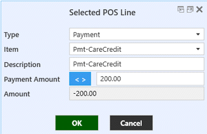
- Enter the Amount of the CareCredit refund for Payment Amount.
- Amount will be automatically entered.
- The CareCredit refund line will be displayed on the credit memo.
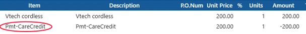
 Note: the refund request will not be submitted to CareCredit until the Credit Memo is finalized. If you are not ready to finalize the credit memo yet, you can close it at this point and come back later. (see Saving POS Documents)
Note: the refund request will not be submitted to CareCredit until the Credit Memo is finalized. If you are not ready to finalize the credit memo yet, you can close it at this point and come back later. (see Saving POS Documents)- To Finalize the credit memo and submit the refund request to CareCredit:
- Click the Final button
 . A confirmation message will popup - click Yes to continue.
. A confirmation message will popup - click Yes to continue. - The CareCredit Return/Credit screen will popup.
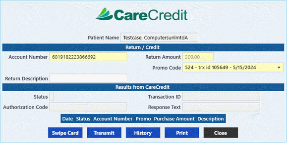
- If you have previously looked up this patient's CareCredit account, or applied for a new account from TIMS, their existing Account Number will be pre-filled. If it is not filled and this number is available, you can type it in here. If they have a CareCredit credit card and you have an attached card swiping device, click Swipe Card to obtain the account information.
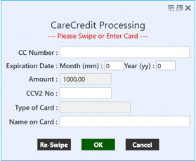
- The Return Amount will be pre-filled in with the amount previously entered on on the refund line.
- Promo Code is required and must match one that was previously used for a patient's purchase. The Promo Code drop-down list will show any promo codes that have been used in the past for purchases (payments) by this patient (through TIMS). If there were multiple purchases and/or promo codes used, the list will be ordered by most recent first. Choose the appropriate code.
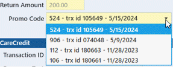
- Enter a description of the sale in the in Return Description field if desired.
- When all information has been entered, click the Transmit button
 to submit the payment request.
to submit the payment request. - If the refund is approved, a message indicating this will popup. Click OK to continue.
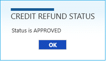
- A receipt will automatically be sent to default printer. Accept the printer selected or select a different one, then click Print. Two copies of the "Refund" receipt will print.
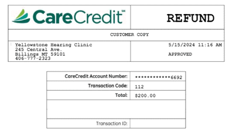
- If the transaction is denied, as message will popup indicating CareCredit's response. You may need to contact CareCredit to resolve the issue. If the refund does not process at CareCredit, you will see this message and the credit memo cannot be finalized. You must resolve the issue with CareCredit or change the payment type to something else.
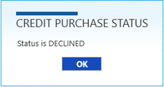
- Click the black Close button
 to return to the POS Invoice screen, then click Exit.
to return to the POS Invoice screen, then click Exit.
CareCredit Refund without Credit Memo
- Select the desired patient in the Patients Panel, then click on the point of sale icon.
- Click the Payment/Refund Check button. Create a new payment or open an existing one. (see POS Payment Receipt help for more details)
- Click the radio button in front of the CareCredit option to indicate that this refund is from CareCredit.

- Select "CareCredit" for Payment Method and enter the Amount of the payment. The Payment Reference will be filled in automatically after a response is received from CareCredit.
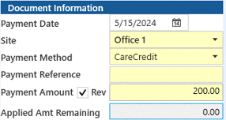
- Click the Rev checkbox to indicate that this is a Payment Reversal.
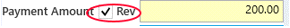
- Note: the refund request will not be submitted to CareCredit until the Payment Reversal document is finalized. If you are not ready to finalize the refund yet, you can close it at this point and come back later. (see Saving POS Documents)
- To Finalize the document and submit the payment request to CareCredit:
- Click the Final button .
- A message will popup to confirm that you wish this to be a payment reversal (refund). Click Yes to continue. Another message will ask if you wish to continue finalizing. Click Yes again.
- The CareCredit Return/Credit screen will popup.
- If you have previously looked up this patient's CareCredit account, or applied for a new account from TIMS, their existing Account Number will be pre-filled. If it is not filled and this number is available, you can type it in here. If they have a CareCredit credit card and you have an attached card swiping device, click Swipe Card to obtain the account information.
- The Return Amount will be pre-filled in with the amount previously entered on on the refund line.
- Promo Code is required and must match one that was previously used for a patient's purchase. The Promo Code drop-down list will show any promo codes that have been used in the past for purchases (payments) by this patient (through TIMS). Choose the appropriate code.
- Enter a description of the sale in the in Return Description field if desired.
- When all information has been entered, click the Transmit button to submit the payment request.
- If the refund is approved, a message indicating this will popup. Click OK to continue.
- A receipt will automatically be sent to default printer. Accept the printer selected or select a different one, then click Print. Two copies of the "Refund" receipt will print.
- If the transaction is denied, as message will popup indicating CareCredit's response. You may need to contact CareCredit to resolve the issue. If the refund does not process at CareCredit, you will see this message and the credit memo cannot be finalized. You must resolve the issue with CareCredit or change the payment type to something else.
- Click the black Close button to return to the POS Invoice screen, then click Exit.